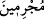
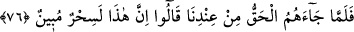
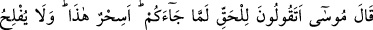
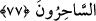

adamlarına” Fir’avn’un kavminin ileri gelenlerine “gönderdik.” ileri gelenler lâfzı ile
kavmin tamamı yerine sadece bir bölümünün zikri ile iktifâ edilmiştir. “Fakat onlar
böbürlendiler” Böbürlenmek, haksız yere büyüklük iddiâsında bulunmak demektir.
Musa ile Harun onlara geldiler, peygamberlik görevlerini tebliğ ettiler, onlar ise Musa
ve Harun’a ittibâ etmekten böbürlendiler. Böbürlenme, mel’un Fir’avn’un şu sözüdür:
“Seni bir çocuk iken yanımızda terbiye etmedik mi? Ömrünün bir kısmını
aramızda geçirmedin mi?” (eş-Şuarâ, 26/18)
“Zaten suç işleyen bir topluluk idiler.” Yani, büyük günah işlemeye alışıktılar.
Çünkü “
(cürüm işleyen)” kelimesi, günahın büyük olduğunu gösterir. İşte bu
yüzden Allah Teâlâ’nın peygamber gönderişini hafife aldılar.
76. Onlara katımızdan hak gelince: “Bu apaçık bir sihirdir.” dediler.
“Onlara katımızdan hak gelince” “Hak”tan maksat, dokuz mûcizedir. Fir’avn
kavminin yaptığı gibi bir illüzyon ve göz boyama olmayıp Allah’ın yaratması ve var
etmesi ile Allah katından olan apaçık gerçektir.
“Bu” getirdiğin ve mûcize adını verdiğin “apaçık bir sihirdir.” sihir olduğu apaçık
bir şeydir “dediler.”
77. Musa: “Size gelen hak için böyle mi diyorsunuz? Bu sihir midir? Halbuki
sihirbazlar iflâh olmazlar.” dedi.
“Musa: “Size gelen” size gelip de kendisine vâkıf olduğunuzda ya da hiç düşünüp
taşınmadan hemen ilk anda “gerçek” yani kesin bâtıl olan sihirden en uzak şey “için
böyle mi diyorsunuz?” Bu soru zikredilen hususu reddetmek, ayıplayıp kötülemek için
sorulmuştur. Aynı zamanda açıklama yapmak için getirilen bir başlangıç cümlesidir.
Hakka vâkıf olduklarında ya da hiç düşünmeden ilk anda böyle söylemeleri
durumlarında ikisi de mezkûr söze zıt düşmez. Musa’nın asıl söylediği söz ise, önceki
âyet buna delâlet ettiği için hazfedilmişdir. Takdiri şöyledir: Bu gerçeğe sihir mi
diyorsunuz? Oysa bu, hiç kimsenin söyleyemeyeceği, hiç kimsenin konuşamayacağı
şeylerdendir.
Âyetteki “deme”nin ayıplama ve tenkit etme mânâsına olması da caizdir. İnsanlar,